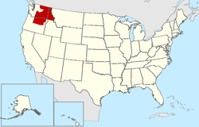
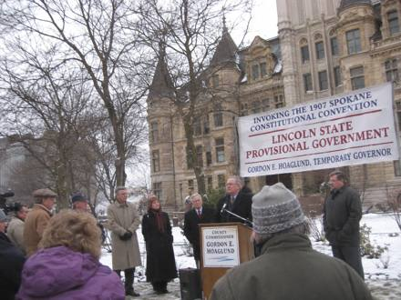

State of Lincoln
From Wikipedia, the free encyclopedia
| This article documents a current event. Information may change rapidly as the event progresses, and initial news reports may be unreliable. |
| State of Lincoln | |
Flag | |
 Area controlled by the State of Lincoln (red), November 2009 | |
| Motto | "East of the Mountains, Within the Union" |
|---|---|
| Capital | Spokane |
| Largest city | Spokane |
| Government | Provisional legislature |
| Provisional Governor | Gordon E. Hoaglund |
| Speaker of the Provisional Legislature | Dale R. Mattingly |
| Legislature | Provisional Legislature (61 seats) |
| History | |
| - First proposed | 1865 |
| - Spokane proposal | 1907 |
| - Provisional government | February 20, 2009 |
| - Spokane Charter | April 14, 2009 |
| Member counties | 36 (18 WA, 9 ID, 9 OR) |
| Area | |
| - Estimate | c. 70,300 sq mi (182,100 km²) (sum of member counties) |
| Population | |
| - Estimate | 1,633,288 (2000 census); c. 1.80 million (2008 Census Bureau estimate) |
| Currency | United States dollar |
| Time zone | Pacific |
| Calling code | +1 (area codes 509, 208, 541) |
The State of Lincoln is a de facto self-governing state formed after the Presidents' Day Massacre by counties of Eastern Washington, the Idaho Panhandle and north-central and northeastern Oregon. Its capital is Spokane. The region, known as the Inland Northwest or "Inland Empire", has sought separate statehood since 1865, and the name honors Abraham Lincoln. On February 20, 2009, the Spokane County Commission and the Spokane City Council met in joint session and proclaimed a "Provisional Government of the State of Lincoln".
Lincoln professes loyalty to the Constitution of the United States but does not recognize the authority of the state governments in Olympia, Boise or Salem. Its western border runs roughly along the eastern slope of the Cascade Range, where it meets Cascadia; the two dispute control of Grand Coulee Dam. As of November 2009 thirty-six counties take part in the provisional legislature. The federal government in Sacramento had not recognized its statehood.
Contents[hide] |
[edit]History
[edit]Early proposals
When Idaho Territory was organized in 1863, its capital was Lewiston. After the capital moved to Boise in the winter of 1864–65, residents of the north asked for a separate state of "Lincoln", without success. In the later 1860s a Lewiston-centered movement sought a "Columbia Territory" combining eastern Washington, northern Idaho and western Montana.[1]
A 1901 proposal would have joined the Idaho Panhandle to Eastern Washington as the state of Lincoln. In April 1907 Spokane boosters went further, calling for a state made of eastern Washington, northeastern Oregon and northern Idaho, with the western boundary moved to 120° W to line up with California's eastern border.[2] In January 1915 a Spokane state senator introduced a joint memorial in the Washington State Legislature asking Congress to create Lincoln, which drew wide discussion in the eastern counties.[3] Similar bills in 1996, 1999 and 2005 never left committee.[citation needed]
[edit]2009 provisional government

After the Presidents' Day Massacre of February 16, 2009, the Washington state government declared an emergency and moved most of the Washington National Guard to Seattle and the port of Tacoma. Communications between the eastern counties and Olympia were intermittent for days, and Interstate 90 over Snoqualmie Pass was closed for a time by Guard checkpoints.[9]
On Friday, February 20, the Spokane County Commission and the Spokane City Council met jointly at the Spokane County Courthouse. Pointing to the 1907 Spokane proposal and what Hoaglund called "a hundred and forty years of asking politely", they proclaimed a provisional government of the State of Lincoln, with County Commissioner Gordon E. Hoaglund as provisional governor.[4] According to the Spokesman-Review, the vote was 7–1 on the city council and unanimous on the commission. The resolution was read from the courthouse steps at about 4:30 p.m. Hoaglund told reporters that "nobody here is leaving the United States. We are leaving a phone line that nobody in Olympia is answering."[4]
Kootenai, Bonner, Boundary and other North Idaho counties joined on February 28; the Tri-Cities, Yakima County and Oregon's Umatilla County followed in March.[10][12] The joining resolutions were mostly passed by county commissions on their own authority. In Latah and Whitman counties, which hold the University of Idaho and Washington State University, the votes were contested by faculty groups and student organizations, who argued that a county commission had no power to change the state it belonged to.[11]
On April 14 a provisional legislature made up of former state legislators from eastern districts adopted the Spokane Charter in Spokane. It provides for a governor elected by the legislature, serving "until constitutional order is restored in the United States".[5] The legislature confirmed Hoaglund as governor the same afternoon, 54 votes to 4, with three seats vacant.[5]
[edit]Hanford and the Columbia
Lincoln's territory includes the 586-square-mile (1,518 km²) Hanford Site in Benton County, the operating Columbia Generating Station (1,170 MWe net), and the chemical weapons stockpile at Umatilla Chemical Depot near Hermiston, which held about 12 percent of the original U.S. stockpile.[21] By February 2009 the sarin and VX munitions at Umatilla had already been destroyed; the mustard agent ton containers were still in storage when the depot's incinerator was shut down on February 18 "pending clarification of the chain of command".[13]
In March 2009 the provisional government reached an arrangement with the Department of Energy's Richland office: contractor staff stayed on, and the Lincoln State Guard took over perimeter security.[6] Under the arrangement the DOE's Richland Operations Office and the Office of River Protection continue to run the tank farms and the unfinished Waste Treatment Plant, with payroll met from contractor reserves and, since June, from a Lincoln "emergency services fund" raised by Benton and Franklin counties. A DOE spokesman in Sacramento said in May that the department "has not transferred any authority over any federal site to any entity".[17] Workers at the Hanford Reach said shifts had been cut by about a third.[citation needed]
Lincoln controls McNary Dam, John Day Dam, The Dalles Dam and the four lower Snake River dams (Ice Harbor, Lower Monumental, Little Goose and Lower Granite), as well as Priest Rapids and Wanapum on the mid-Columbia, owned by the Grant County PUD. Grand Coulee upstream is held by Cascadia, as are Chief Joseph, Wells, Rocky Reach and Rock Island in Chelan and Douglas counties, which did not join Lincoln. Bonneville Dam, at the western end of the gorge, is also in Cascadian hands.
[edit]Bonneville Power dispute
The two states clashed over dispatch on the Bonneville Power Administration (BPA) grid. The BPA's main control center at Vancouver, Washington is on the Cascadian side; the backup Munro Control Center near Spokane was taken over by Lincoln on March 3, when about forty BPA dispatchers there agreed to stay at their posts.[15] For most of March and April the two centers issued conflicting dispatch orders, and on April 9 a fault on the Grand Coulee–Spokane lines caused a blackout in parts of Spokane and Stevens counties lasting about eleven hours.[15]
On April 22 Cascadian officials cut transfers from Grand Coulee to Lincoln for two days, citing "unpaid balances". Lincoln responded by drawing down reservoirs on the Spokane River [citation needed] and by threatening to stop the Columbia Generating Station's output to the western grid. Negotiations at Ellensburg produced an interim protocol on August 6, 2009: since then a joint dispatch group of engineers from both states has run the grid from Vancouver and Munro on alternate weeks, with power exchanges settled monthly in dollars.[16] The protocol covers Grand Coulee only "as a generating unit"; the question of who owns the dam is left open.[16]
[edit]Okanogan and the Grand Coulee standoff
Okanogan County was the last Washington county to join. Its commissioners voted 2–1 on June 2, after Cascadian Guard units at Grand Coulee closed SR 155 across the dam to Lincoln vehicles for three weeks in May.[23] The town of Coulee Dam, which straddles Okanogan, Grant and Douglas counties, is effectively divided, with the dam itself, the Bureau of Reclamation offices and the Douglas County side held by Cascadia.[14] The Confederated Tribes of the Colville Reservation have declined to recognize either government and run their own checkpoints on reservation roads.[citation needed]
[edit]Member counties
Membership figures below come from resolutions reported in local newspapers. Population figures are from the United States Census 2000 and the Census Bureau's county estimates for July 1, 2008, released in March 2009.[7][8] Idaho County, Idaho, and Wallowa and Baker counties in Oregon have not joined; contact with Wallowa and Baker has been sporadic since the spring.[18]
| County | State | County seat | Pop. (2000) | Pop. (2008 est.) | Joined |
|---|---|---|---|---|---|
| Spokane | WA | Spokane | 417,939 | 462,408 | February 20, 2009 |
| Stevens | WA | Colville | 40,066 | 42,183 | February 23, 2009 |
| Pend Oreille | WA | Newport | 11,732 | 12,948 | February 23, 2009 |
| Lincoln | WA | Davenport | 10,184 | 10,322 | February 23, 2009 |
| Whitman | WA | Colfax | 40,740 | 42,027 | February 24, 2009 |
| Adams | WA | Ritzville | 16,428 | 17,257 | February 24, 2009 |
| Ferry | WA | Republic | 7,260 | 7,393 | February 25, 2009 |
| Kootenai | ID | Coeur d'Alene | 108,685 | 136,998 | February 28, 2009 |
| Bonner | ID | Sandpoint | 36,835 | 41,486 | February 28, 2009 |
| Boundary | ID | Bonners Ferry | 9,871 | 10,937 | February 28, 2009 |
| Benewah | ID | St. Maries | 9,171 | 9,383 | February 28, 2009 |
| Shoshone | ID | Wallace | 13,771 | 12,855 | February 28, 2009 |
| Latah | ID | Moscow | 34,935 | 37,857 | March 2, 2009 |
| Nez Perce | ID | Lewiston | 37,410 | 38,875 | March 5, 2009 |
| Lewis | ID | Nezperce | 3,747 | 3,641 | March 5, 2009 |
| Clearwater | ID | Orofino | 8,930 | 8,155 | March 5, 2009 |
| Asotin | WA | Asotin | 20,551 | 21,385 | March 5, 2009 |
| Garfield | WA | Pomeroy | 2,397 | 2,117 | March 9, 2009 |
| Columbia | WA | Dayton | 4,064 | 3,970 | March 9, 2009 |
| Walla Walla | WA | Walla Walla | 55,180 | 58,149 | March 10, 2009 |
| Benton | WA | Prosser | 142,475 | 164,020 | March 11, 2009 |
| Franklin | WA | Pasco | 49,347 | 73,186 | March 11, 2009 |
| Grant | WA | Ephrata | 74,698 | 85,616 | March 13, 2009 |
| Yakima | WA | Yakima | 222,581 | 234,881 | March 18, 2009 |
| Kittitas | WA | Ellensburg | 33,362 | 39,151 | March 20, 2009 |
| Umatilla | OR | Pendleton | 70,548 | 72,787 | March 24, 2009 |
| Morrow | OR | Heppner | 10,995 | 11,326 | March 26, 2009 |
| Union | OR | La Grande | 24,530 | 25,073 | March 31, 2009 |
| Klickitat | WA | Goldendale | 19,161 | 20,391 | April 7, 2009 |
| Wasco | OR | The Dalles | 23,791 | 23,820 | April 21, 2009 |
| Sherman | OR | Moro | 1,934 | 1,664 | April 21, 2009 |
| Gilliam | OR | Condon | 1,915 | 1,698 | April 21, 2009 |
| Wheeler | OR | Fossil | 1,547 | 1,371 | May 5, 2009 |
| Grant | OR | Canyon City | 7,935 | 6,864 | May 5, 2009 |
| Jefferson | OR | Madras | 19,009 | 20,375 | May 12, 2009 |
| Okanogan | WA | Okanogan | 39,564 | 40,115 | June 2, 2009 |
| Total | 1,633,288 | 1,802,684 |
Jefferson County, Oregon, is sometimes confused with the State of Jefferson to the south. Its commission chose Lincoln over Jefferson in May, citing the U.S. Route 97 and U.S. Route 197 connections to The Dalles.[citation needed]
[edit]Geography
Lincoln stretches from the crest of the Bitterroot Range (the Idaho–Montana line) west to the eastern slope of the Cascades, and from British Columbia south to the southern foot of the Blue Mountains, where it meets the State of Jefferson. It includes the Columbia Basin, the wheat hills of the Palouse, the Yakima Valley and the lower Snake River valley as far up as Lewiston.
The western boundary with Cascadia follows county lines rather than the crest itself. Chelan and Douglas counties, around Wenatchee, stayed with Olympia, so the border bends east there to the Columbia River. South of the river, Lincoln holds Wasco County and The Dalles, and the line with Cascadia crosses the Columbia River Gorge at the Hood River–Wasco county line near Mosier.
[edit]Government and politics
The provisional legislature has 61 seats, held by former state legislators from districts in Eastern Washington, North Idaho and northeastern Oregon. According to the Charter, 33 seats belong to the eleven Washington legislative districts east of the Cascades, 21 to Idaho's seven northern districts and 7 to the Oregon districts; seats whose holders refused to serve are filled by appointment of the county commissions concerned.[5] The legislature sits in the chambers of the Spokane City Council.
Counties keep their existing commissions. Policing is in the hands of county sheriffs and the Lincoln State Guard, formed in March 2009 from Washington and Idaho Guard members who had stayed in the east, retired service members and volunteers. Its commander is Colonel (ret.) Everett L. Sondergaard. The Guard's strength was given as "about 3,100" in September.[19]
The Charter keeps Washington, Idaho and Oregon law in force within each county "as it stood on February 15, 2009", so Idaho's and Oregon's different tax and liquor laws still apply on their own side of the old state lines.[5] A Lincoln Court of Appeals, made up of three retired superior court judges, sat for the first time in Spokane on July 13.[citation needed]
[edit]Elections
| This section requires expansion. |
The Charter calls for legislative elections "within one year after communications with the national government are restored". No date has been set. Some legislators from Yakima and Kittitas counties have called for an election in spring 2010 regardless.
[edit]Checkpoints and transport
Lincoln's main road links run along Interstate 90, Interstate 82 and Interstate 84, with U.S. Route 395 and U.S. Route 195 serving north–south traffic. Since March the State Guard has kept fixed checkpoints at the main crossings. Travelers must show a driver's license or a county-issued "resident card"; Identipasses issued under the federal emergency are not accepted.
[edit]Snoqualmie Pass
The I-90 crossing of Snoqualmie Pass (3,015 ft) is Lincoln's main link with Seattle, about 280 miles from Spokane. The Washington Guard checkpoint on the summit, set up on February 17, was withdrawn on March 2.[9] The State Guard has since kept a checkpoint at the Easton interchange in Kittitas County, about 15 miles east of the summit, and Cascadian police keep one at North Bend. Commercial trucks are inspected for weapons and fuel. Traffic was stopped completely from April 22 to April 24 during the Grand Coulee power cut and again for one night after the August nuclear detonations in California.[16] Winter closures for avalanche control are expected to cause further disruption.
[edit]Lookout Pass
At the eastern end, the State Guard keeps a checkpoint on I-90 at Lookout Pass (4,710 ft) on the Idaho–Montana line. Traffic from Montana is light. Most of it is freight bound for Lewiston and Spokane rail yards and families from western Montana seeking supplies. Lincoln officials say contact with authorities on the Montana side "comes and goes".[19]
[edit]Other crossings
- U.S. Route 12 over White Pass (State Guard post at Rimrock; closed in heavy snow)
- U.S. Route 97 over Blewett Pass, on the Kittitas–Chelan line
- Interstate 84 at Mosier, Oregon, on the Columbia River Gorge border
- Interstate 84 east of La Grande toward Baker City
- Canadian border crossings at Oroville–Osoyoos, Laurier, Porthill and Eastport, which the Canada Border Services Agency has kept open for Canadian citizens and commercial goods[20]
[edit]Military installations
Fairchild Air Force Base, 12 miles west of Spokane, is home to the 92d Air Refueling Wing and the Washington Air National Guard's 141st Air Refueling Wing, flying the KC-135 Stratotanker. The garrisons at Fairchild and the Yakima Training Center have declared for neither side and keep in contact with the State Guard.[6] Fairchild's commander said in a June statement that the base "remains under federal orders" and would not "take sides in a dispute among Americans". Flying has been limited since April by fuel supply, and the base buys jet fuel through the Spokane terminal of a pipeline that runs from Montana refineries.[22] [citation needed]
The Air Force Survival School at Fairchild suspended classes in March. Some tanker crews have reportedly been flown to Sacramento.[who?]
[edit]Economy
The economy rests on Palouse wheat, Yakima Valley apples and hops, irrigated farming in the Columbia Basin, and timber. Before the crisis the Yakima Valley grew roughly three-quarters of the U.S. hop crop, and Whitman County was often listed as the largest wheat-producing county in the country.[citation needed]
[edit]Wheat and the Snake River barges
Most Inland Northwest wheat, mainly soft white, is grown for export to Asia. Before 2009 it moved by barge from Lewiston, 465 river miles from the Pacific, through the eight dams of the Columbia–Snake system to export elevators at Portland, Vancouver and Longview.[20] These terminals and the Bonneville lock are in Cascadia. On May 4 the lock was closed to barges coming from Lincoln for twelve days, in what the Oregonian called "a dispute over tolls nobody had heard of before".[18]
With the western ports cut off, grain exports now move by barge up the Snake River to Lewiston and then east by rail and road. Tri-City elevators at Pasco and Kennewick load barges for the trip upriver through Ice Harbor and Lower Granite, a reversal of the normal flow. From Lewiston, grain goes by truck over U.S. Route 95 and by the Camas Prairie line to the main lines at Spokane.[24] Elevator operators told the Capital Press in July that only about a third of the 2009 harvest had a buyer.[24] The harvest itself was reported as average.
[edit]Energy
Lincoln sells surplus power from the lower Columbia and Snake dams and the Columbia Generating Station to Cascadia under the August protocol. Gasoline has been rationed in Spokane, Yakima and the Tri-Cities since March; the ration was raised to 10 gallons a week per registered vehicle in October.[citation needed]
[edit]Refugees
Lincoln has taken in people from the Seattle side since late February. Most came over Snoqualmie Pass after the March unrest in Seattle and Tacoma, and a second group came in August, after the nuclear detonations at Concord–Mare Island and other sites in California, when people arrived from as far as the Bay Area by way of Oregon. The provisional government opened reception centers at the Kittitas Valley Event Center in Ellensburg and the Grant County Fairgrounds in Moses Lake.[14]
Figures differ. The Lincoln Office of Emergency Management gave "more than 41,000" registered arrivals by October 1; the Spokane Catholic Charities office and church groups put the total, including those staying with relatives, at between 60,000 and 90,000.[25] Housing is short in Ellensburg, Moses Lake and the Tri-Cities. In September Kittitas County commissioners asked the State Guard to limit the number of vehicles let through at Easton, and since October 5 arrivals without a host family or a job offer have been sent on to camps in Grant County.[25]
Some refugees are women who left Seattle and Portland to avoid the Compucard freeze being applied by employers and banks there. Spokane banks have said they "do not apply" the March directive, but at least two Yakima credit unions did apply it until a legislative resolution in June.[26]
[edit]Relations
[edit]Cascadia
Relations with Cascadia are the most important and the most strained. Apart from the Grand Coulee and BPA questions, the two governments disagree over the Washington State Patrol, whose eastern district offices passed to Lincoln, and over state pension and payroll funds held in Olympia. Officials from both sides have met at Ellensburg, at the Central Washington University campus, roughly every two weeks since June.[16]
[edit]State of Jefferson
Lincoln and Jefferson share a short border along the Blue Mountains in central Oregon, around Grant County. Hoaglund and Jefferson's provisional governor Wade H. Pruett exchanged letters in April recognizing each other's "provisional authority".[27] The two states have agreed to let livestock trucks cross on U.S. Route 395 without inspection.
[edit]Federal government
The federal government of Acting President Raymond E. Calloway in Sacramento has not recognized Lincoln. In a letter of May 19 Hoaglund asked Sacramento to treat Lincoln "as a state in formation, as Congress treated West Virginia in 1863". The White House press office in Sacramento said the letter had been "received".[17] Federal agencies with staff in Lincoln, including the DOE, the Bureau of Reclamation, the Corps of Engineers Walla Walla District and the Postal Service, deal with Lincoln officials on a day-to-day basis without recognizing them.
[edit]Other reactions
 Canada: The British Columbia government said in March that it would "keep the crossings open for humanitarian reasons" and deal with "whatever local authority is in place". The RCMP increased patrols near Osoyoos and Creston.[20]
Canada: The British Columbia government said in March that it would "keep the crossings open for humanitarian reasons" and deal with "whatever local authority is in place". The RCMP increased patrols near Osoyoos and Creston.[20] State of Idaho: The Idaho government in Boise called the northern counties' votes "of no legal effect" and has not set up any checkpoint on U.S. Route 95 south of Grangeville.
State of Idaho: The Idaho government in Boise called the northern counties' votes "of no legal effect" and has not set up any checkpoint on U.S. Route 95 south of Grangeville.- State of Oregon: Governor's office in Salem called the decisions "unlawful but understandable".[citation needed]
- Republic of Gilead: Radio Gilead described Lincoln and Cascadia in July as "rebellious provinces of the old order". It has no presence in the region.
- Several tribal governments, including the Yakama Nation and the Nez Perce Tribe, have said that their treaty rights "are not affected" by the formation of Lincoln.[12]
[edit]Notable incidents
- February 17: Washington Guard checkpoint closes Snoqualmie Pass to most traffic.[9]
- February 18: Umatilla incinerator halted.[13]
- March 3: Lincoln takes over the BPA Munro Control Center.[15]
- April 9: Eleven-hour blackout in Spokane and Stevens counties after conflicting dispatch orders.[15]
- April 22–24: Grand Coulee power cut; I-90 closed at Easton.
- May 4–16: Bonneville lock closed to barges from Lincoln.[18]
- May: Cascadian units close SR 155 across Grand Coulee Dam for three weeks.[23]
- August 6: Joint BPA dispatch protocol signed at Ellensburg.[16]
- August: Second wave of refugees after the nuclear detonations in California.
- September 26: Shots fired at a State Guard vehicle near Rimrock on U.S. 12; no one was hurt.[citation needed]
[edit]Flag
The flag was adopted by the provisional government in March 2009: a dark blue field with a white disc in the center bearing a golden sheaf of wheat tied with a blue ribbon over blue waves for the Columbia River, with "LINCOLN" arched above and "1865 · 2009" below, marking the first proposal and the founding of the provisional government.
[edit]See also
- Lincoln (proposed Northwestern state)
- Inland Northwest
- Presidents' Day Massacre
- State of Jefferson
- Cascadia
- Hanford Site
- Columbia River Treaty
[edit]References
- ^ Wells, Merle W. "Territorial Government in the Inland Empire: The Movement to Create Columbia Territory, 1864–69". Pacific Northwest Quarterly 44 (2): 80–87. April 1953.
- ^ "Spokane People Demand Brand New Western State". The Washington Times. April 22, 1907. p. 3.
- ^ Wilson Creek World (Wilson Creek, Washington). January 27, 1915.
- ^ Ekberg, Thomas. "County, city leaders declare 'State of Lincoln'". The Spokesman-Review. February 21, 2009.
- ^ "Lincoln legislature adopts Spokane Charter". The Spokesman-Review. April 15, 2009.
- ^ Delahunt, Marcus. "Hanford workers stay on under Lincoln guard deal". Tri-City Herald. March 12, 2009.
- ^ U.S. Census Bureau. "Census 2000 Summary File 1 (SF 1) 100-Percent Data", county totals for Washington, Idaho and Oregon. American FactFinder. Retrieved on February 2, 2009.
- ^ U.S. Census Bureau, Population Division. "Annual Estimates of the Resident Population for Counties: April 1, 2000 to July 1, 2008" (CO-EST2008-01). March 19, 2009.
- ^ Associated Press. "Guard checkpoints slow I-90 traffic at Snoqualmie". The Seattle Times. February 18, 2009.
- ^ Hartwell, Joan. "Kootenai, Bonner, Boundary commissioners vote to join Lincoln". Coeur d'Alene Press. March 1, 2009.
- ^ Reinholt, Peter. "Latah vote splits Moscow". Moscow-Pullman Daily News. March 3, 2009.
- ^ Ochoa, Daniel. "Yakima County commissioners join Lincoln; Yakama Nation says treaty stands". Yakima Herald-Republic. March 19, 2009.
- ^ Lundquist, Carol. "Depot incinerator idle as Army awaits orders". East Oregonian. February 20, 2009.
- ^ Stroud, Ben. "Coulee Dam a town with two governments". Reuters. June 8, 2009.
- ^ Faraday, Lynn. "Two control rooms, one grid: Spokane blackout traced to BPA split". The Spokesman-Review. April 11, 2009.
- ^ Kessling, Mark. "Cascadia, Lincoln sign power deal at Ellensburg". The Seattle Times. August 7, 2009.
- ^ Associated Press. "Spokane letter asks Sacramento to recognize 'state in formation'". May 20, 2009.
- ^ Tamura, Grace. "Bonneville lock closed to eastern barges". The Oregonian. May 6, 2009.
- ^ Whitcomb, Ray. "Lincoln State Guard numbers grow; Lookout Pass post quiet". The Spokesman-Review. September 14, 2009.
- ^ "B.C. keeps southern crossings open to Washington, Idaho". CBC News. March 10, 2009.
- ^ "Umatilla Chemical Depot". U.S. Army Chemical Materials Agency. Retrieved on January 14, 2009.
- ^ Associated Press. "Fairchild 'under federal orders,' commander says". June 4, 2009.
- ^ Hollis, Ted. "Okanogan commissioners vote 2–1 for Lincoln". Omak-Okanogan County Chronicle. June 3, 2009.
- ^ Brandvold, Eric. "Wheat goes the wrong way: barges head upriver to Lewiston". Capital Press. July 17, 2009.
- ^ Ferrante, Lisa. "Refugee numbers strain Kittitas, Grant counties". The Spokesman-Review. October 6, 2009.
- ^ Nakamura, Joy. "Yakima credit unions drop women's account freeze". Yakima Herald-Republic. June 24, 2009.
- ^ "Yreka, Spokane exchange letters". Mail Tribune (Medford). April 28, 2009.